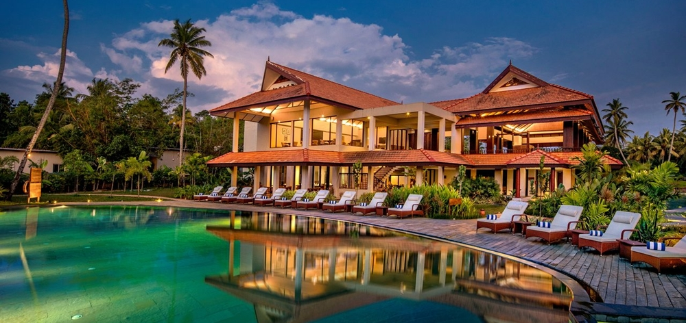

DISTRICT PROFILE
Palakkad is one of the fourteen districts of Kerala and has no coastal line. The district opens the state to the rest of the country through the Palakkad Gap with a width of 32 to 40 Kms. Its historical background, educational status, tourism hot-spots and above all, the development activities that are carried out, are wide and varied. The district is one of the main granaries of Kerala and its economy is primarily agricultural. The district is also the land of Palmyrahs. Palakkad district, formed on January 1, 1957, is the largest district of Kerala. Palakkad is bordered on the north-west by Malappuram district, on the south-west by Thrissur district, on the north-east by Nilgiris district, and on the east by Coimbatore district of Tamil Nadu. The district is known as the granary of Kerala. The location of Palakkad district is in the Coordinates: 10.775o N 76.651o E
DEMOGRAPHY
to the 2011 census, Palakkad district has a population of 2,809,934. The district has a population density of 627 inhabitants per sq km. Its population growth rate over the decade 2001-2011 was 7.39 per cent. Palakkad has a sex ratio of 1067 and literacy rate is 93.10 per cent.There were total 302,297 children under age of 0-6 against 318,884 of 2001 census. Of total 302,297 male and female were 153,696 and 148,601 respectively. Child Sex Ratio as per 2011 Census of India was 967 compared to 963 of census 2001. In 2011, Children under 0-6 formed 10.76 percent of Palakkad District compared to 12.18 percent of 2001. There was net change of -1.42 percent in this compared to previous census of India.
NEWS
Palakkad Update
About us:
HISTORY OF PALAKKAD
In earlier times Palakkad was also known as Palakkattuchery. The word “Palakkad” from the word Palai nilam, which means “dry lands”. The name has two fusion of Malayalam Words Pala means a tree Alstonia scholar is that is found abundantly in Palakkad and second one is Kadu which means forest. Previously Palakkad along with most parts of Kerala were under the rule of the Chera kings or Perumals. With the decline of Chera dynasty, parts of this district were ruled by Palakkad Rajas who were believed to be a branch of Zamorins (Samudiri Rajavamsam) of Calicut who later declared independence. Some parts were under Kollengode Rajas of Vengunad and the Valluvanad part of the district was ruled by Valluvakonathiris . For a brief period, some areas of the district near Chittur came under the attack of the nearby Kongu king when the local people resisted the Kongu invasion successfully. Until 1947 , Palakkad was a part of the Malabar District of Madras Presidency during the British Raj . From 1947 to 1956 Palakkad came under the princely state of Cochin and Madras state. In the year 1956 , It was made a separate district of Kerala when the state was formed .The history Palakkad Fort dates back to 1766 and it was constructed by Hyder Ali, the father of Tipu Sultan.
CELEBRITIES
| Vidhya Balan Listed In :Flim & Theater Personalities Famous as :Actress Birth Date June 1,1979 |
 |
E.Sreedharan Listed In : Engineers Famous as :Metro Man Birth Date June 12,1932 | |

| Souwmya Swaminathan Listed In :Sports Person Famous as :Chess Player Birth Date March 21,1989 |
OV.Vijayan Listed In :Writer Famous as :Authors Birth Date July 2,1930 |
|
| Stephen Devassy Listed In :Pianist Famous as :Music Director Birth Date February 23,1981 |
Goutham Menon Listed In :Director,Screen Writer,Actor Famous as :Director Birth DateFebruary 25,1973 |
ads...
HOTEL DIGA

RS:4000/DAY
DIGA RESORT NEAR KANJIRAPUZHA
MANNARKKAD, PALAKKAD KERALA 678591
Condact us:
7304856922/digaresort09@gmail.com